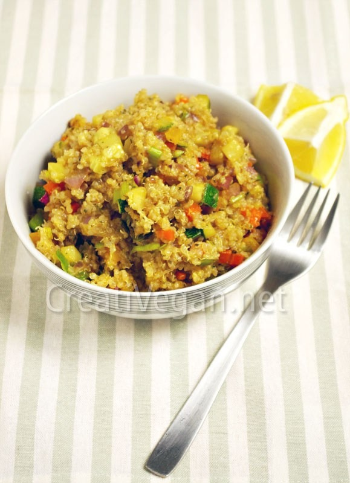

INGREDIENTES
1/2 taza de quinoa
1/2 pastilla de caldo de verduras o 1/4 de cucharadita de sal
3 cucharadas de aceite de oliva
1/4 de calabacín mediano
1/4 de cebolla morada
1 zanahoria grande
1/2 pimiento amarillo mediano
1/2 pimiento italiano rojo
1/4 de puerro mediano
1/4 de cucharadita de sal
1 cucharadita de perejil picado
1/2 cucharadita de ajo en polvo
1/4 de cucharadita de comino en polvo (opcional)
Preparacion: Pon la quinoa en un colador y lávala con agua fría. Escúrrela muy bien para que se seque lo máximo posible.
Calienta en una cacerola mediana 1 cucharada de aceite de oliva a fuego medio y tuesta ligeramente la quinoa, removiendo constantemente, durante 2-3 minutos. Si ves que se pega, baja un poco el fuego. Pon el caldo de verduras o la sal y 1 taza y 1/2 de agua caliente, sube el fuego y cuando empiece a hervir déjalo cocer a fuego medio-bajo, removiendo de vez en cuando, durante 12-14 minutos o hasta que se haya absorbido casi todo el agua. Apaga el fuego y déjalo reposar medio tapado 5 minutos.
Mientras se hace la quinoa lava las verduras y pícalas en trocitos pequeños. Pon 2 cucharadas de aceite en una sartén mediana antiadherente a fuego medio-alto y agrega las verduras, la sal y las especias. Saltéalo y remuévelo para que se haga uniformemente. Sólo necesita 4 minutos, lo justo para que empiecen a dorarse y la cebolla esté tierna. Sácalo y ponlo en boles o platos para servir.
Destapa la quinoa después del tiempo de reposo y espónjala con un tenedor, como si fuese cuscús, para que no se apegotone y quede esponjosa y tierna. Repártela en los boles o platos y mézclala con las verduras. Sírvelo caliente o templado.
No os había subido recetas con quinoa, aunque en muchas sí os he comentado que se podían sustituir ciertos ingredientes por quinoa, sobre todo en platos de cereales y semillas pequeños.
La verdad es que no uso mucho la quinoa, la compro muy poco, principalmente por el precio (en torno a los 12€/kg de media), pero la uso igual que muchos otros cereales y legumbres. La quinoa sola está bien, tiene más sabor que el cuscús (que es pasta) y que el mijo (por poner un ejemplo), recuerda más al trigo sarraceno y al bulgur, con algún aroma almendrado y de otros frutos secos. Por eso os he puesto que le pongáis al agua de cocer o caldo de verduras (para más sabor) o sólo sal (para disfrutar de su sabor tal cual). Al cocerla la quinoa queda suelta y esponjosa. Si está apegotonada y parece puré, es que se ha pasado. Aún así es comestible y conserva una textura agradable. Para tomarla en ensalada, en cuscús, en paella… vamos, para todo lo que sea que quede sueltecita, prefiero tostarla un poco antes. No sólo desarrolla más sabores y más intensos, sino que además acorta unos minutos el tiempo de cocción y favorece que quede más suelta. Cuando quiero usarla como aglutinante, dejo que se haga un poco más, así es más fácil mezclarla con el resto de ingredientes y que haga de “cemento” por ejemplo en hamburguesas, albóndigas, etc., y que se deshaga mucho mejor en cosas al horno como quiches y tartas saladas, muffins y panes. Piensa en la quinoa como en un cruce de legumbre y cereal: podemos cocer las legumbres, freírlas, aplastarlas y hacer puré, utilizarlas como aglomerante en albóndigas y hamburguesas, como crema en tartas, como paté… y como cereal se puede hasta hacer porridge para desayunar. Es cuestión de examinar la quinoa cocida y hacer todo lo que se nos pase por la cabeza con ella. ¿Se puede batir y queda cremosa? Pues bechamel, relleno de croquetas, de quiches y tartas, de tortillas, para mezclar con harina y hacer muffins o panecillos, para hacer paté… vamos, que por versatilidad que no quede. Y además no contiene gluten.
Eso sí, antes de usar la quinoa siempre tenéis que lavarla porque la superficie está recubierta de saponina, que genera la propia planta como protección, pero que tiene un sabor muy amargo y en grandes cantidades es tóxica (ojo, en grandes cantidades, no por 2 o 3 tazas, y no tóxica como para morirse, irrita el sistema gastrointestinal). Si no lavas la quinoa después sabe amarga, así que es mejor hacerlo.